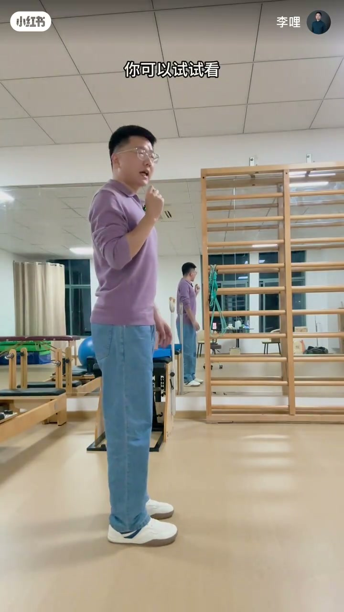
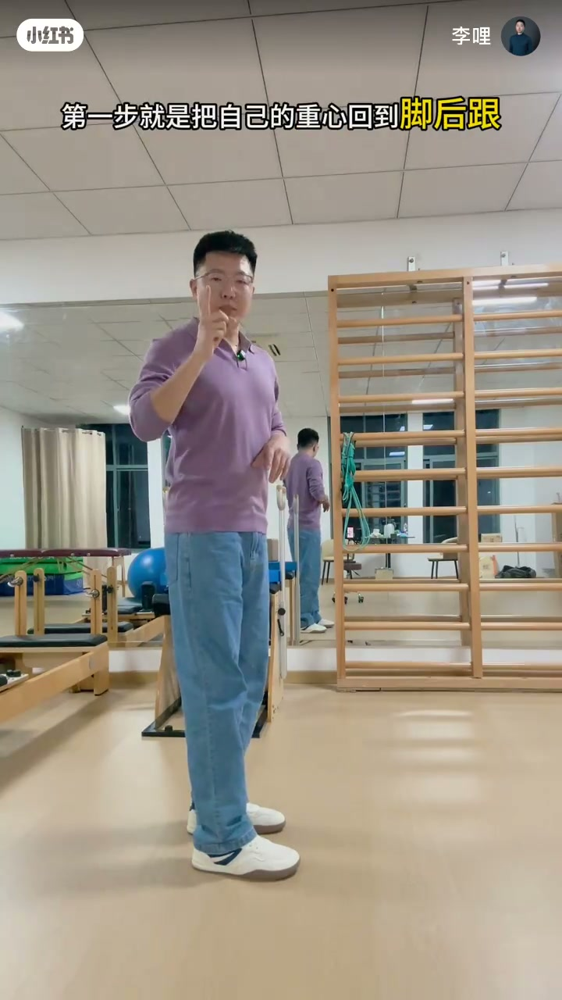
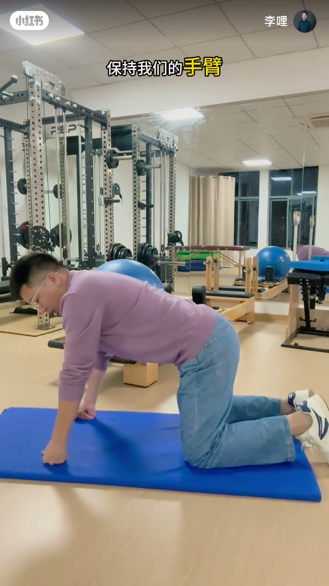
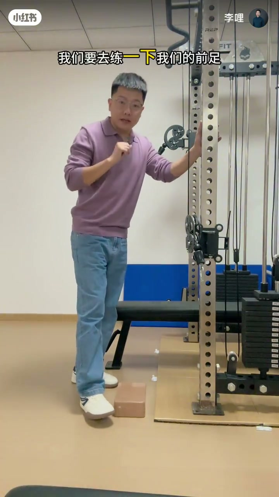
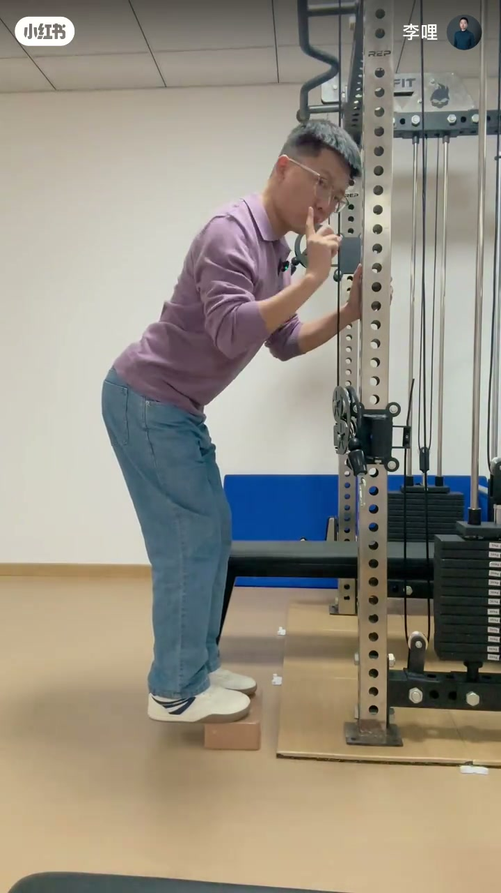

内容要点
「李哩」指出多数头颈前伸其实不是「头的问题」：重心偏前时胸廓会后压去平衡重力，脖子才被迫前伸。纠正第一步是重心回到脚后跟、胸口不要向后压缩，再主动把脖子拔高。示范鸟狗式激活全身，后段进入前足训练；Whisper 分段很少，字幕与画面补全了脚与胸廓线索。
知识结构
头前伸常见主因不在头本身（字幕：其实不是头本身的问题）。
重心回脚后跟；胸廓不要向后压缩；才能主动抬颈。
四点支撑对侧手脚伸，保持2–3秒，拔高脖子。
第二段训练前足，改善重心与平衡（口播极稀，依画面字幕）。
头前伸先查脚下重心：脚后跟承接、胸廓不后压，脖子才抬得起来。
00:00-00:46头前伸：先把重心还给脚后跟
开场：绝大多数人头颈前伸，最主要原因——字幕直接写「其实不是头本身的问题」。侧身演示胸廓为平衡重力而后压（「胸廓去为了去平衡它重力的影响」）。
对策：想练好脖子，第一步把重心回到脚后跟，让胸口/胸廓不要向后压缩，才能主动把脖子抬起来。随后预告两个改善重心与平衡的动作。


00:46-02:09鸟狗式与前足训练
第一式鸟狗：四点跪姿，对侧手脚伸出，字幕「可以保持2到3秒钟」；强调脖子往上拔高。
后半进入「我们要去练一下我们的前足」：扶器械、脚下垫砖，练前足力量与平衡。口播在1分后几乎中断，动作名称与要点以画面字幕为准。



完整转录（7段）
以下文本由 Whisper medium 模型自动转录，可能存在少量识别误差，已尽可能修正。
绝大多数的人发生头颈前身的
最最主要的原因
所以你想把自己的脖子练得很好 第一步就是把自己的重心回到脚后跟 让自己的胸口不要向后去压缩
才能把脖子主动的去抬起来 接下来呢 我教大家两个可以去改善你重心和平衡的方法
第一个动作呢 我们做一个鸟狗式 这是一个非常好的去激活你全身的一个动作
脖子往上拔高 拔高之后呢
这个动作呢你可以